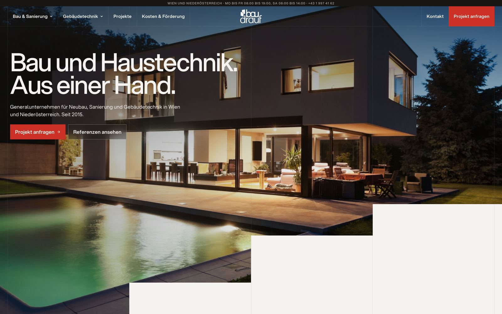
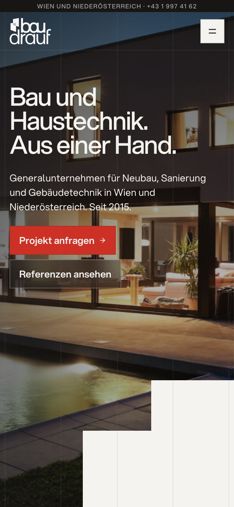

A website that says what BAUDRAUF really does.
A new homepage, a clearer sitemap and a few steps so AI assistants like ChatGPT name you when people ask for a contractor in Vienna. All three rest on one idea and one set of facts.
Building work and building services from one company that holds both trade licences. A renovation and the new heating, planned together. Few firms in Vienna say this clearly, and it is exactly what people now ask AI assistants.
Proof first, one action, your own work.
Every photo, project, client logo and quote is yours, taken from baudrauf.at.
Open the concept →

Every page stays. Three new ones.
Your service pages keep their addresses, so nothing that ranks today is lost. The menu gets simpler, and three pages cover work you already do but nobody can find.
Compare with the site today →Sanierung + Heizung
The renovation and the switch from gas to a heat pump as one project, one contract.
Für Unternehmen
Property managers, insurers, shops and Gastro. You already work for them; the site does not say so.
Kosten & Förderung
Prices and subsidies in one place, with a date, so no page contradicts another.
Being the firm the AI names.
More people ask ChatGPT or Google's AI which company to hire. The assistant names two or three firms. Here is where BAUDRAUF stands today.
So every source agrees on who you are
- Remove contradictions, like "25+ Jahre" next to "seit 2015". Today an AI already calls you "relativ jung"
- Date every subsidy statement
- The same facts on the site, Google and the directories
So the AI has something to quote
- Each service page opens with a direct answer: what, where, rough cost, how long
- Your 37 references linked to the right services
- The three new pages above
So others confirm what you say
- More Google reviews, asked for at every handover
- Listed where people ask "who should I hire", such as daibau and my-hammer
- Your customer videos with a written transcript
A short call to see if this fits.
If the direction feels right, we agree the scope together and start with the facts and the homepage.
- Which services matter most to you right now?
- Which numbers on the site can we confirm, for example "1000+ Projekte"?
- Who looks after the website today?